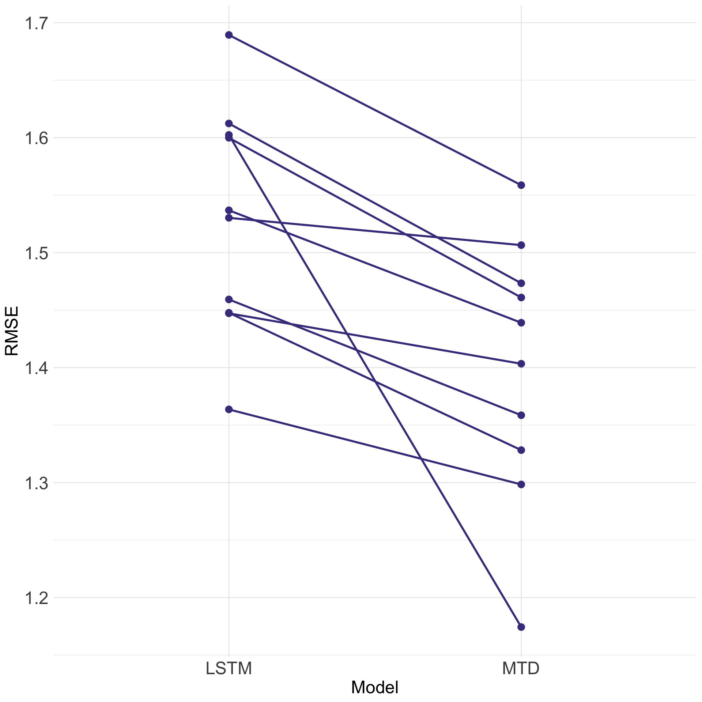
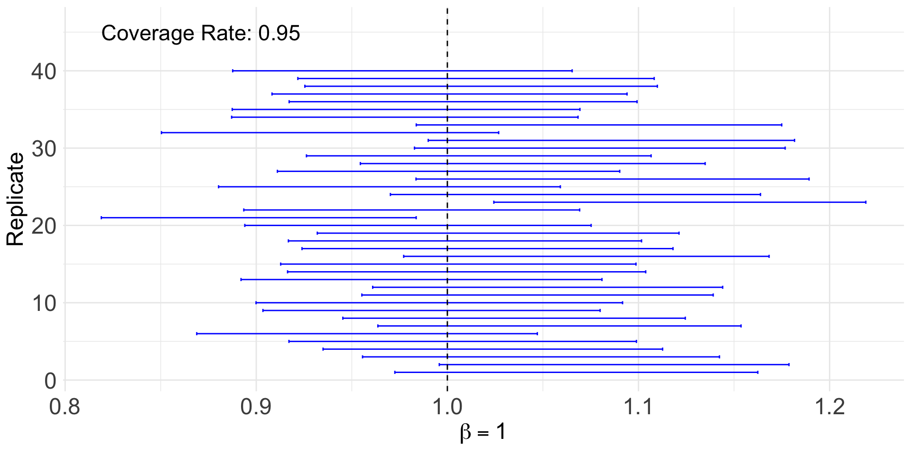
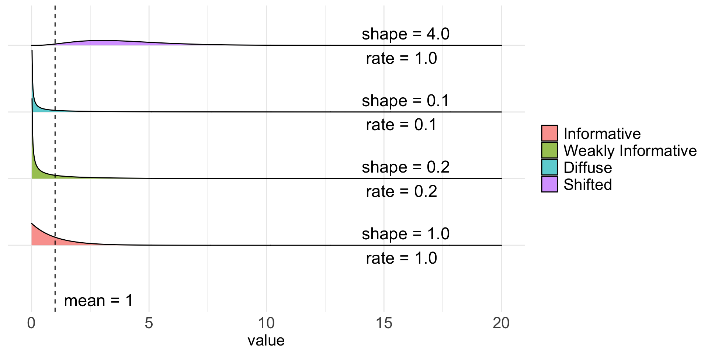
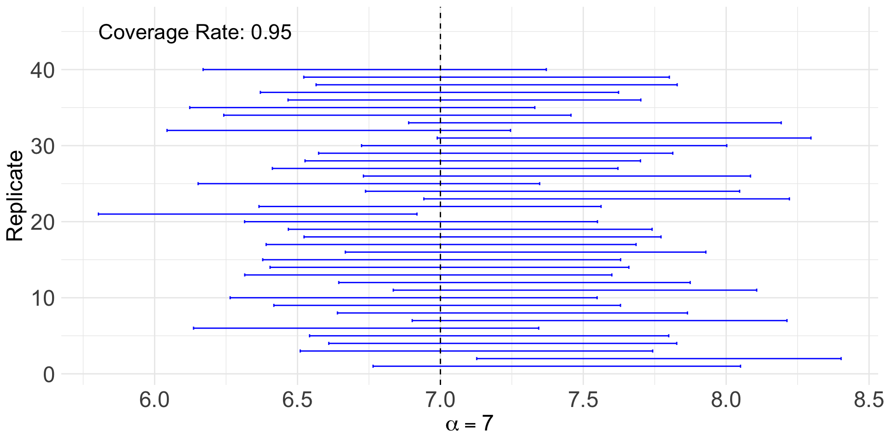
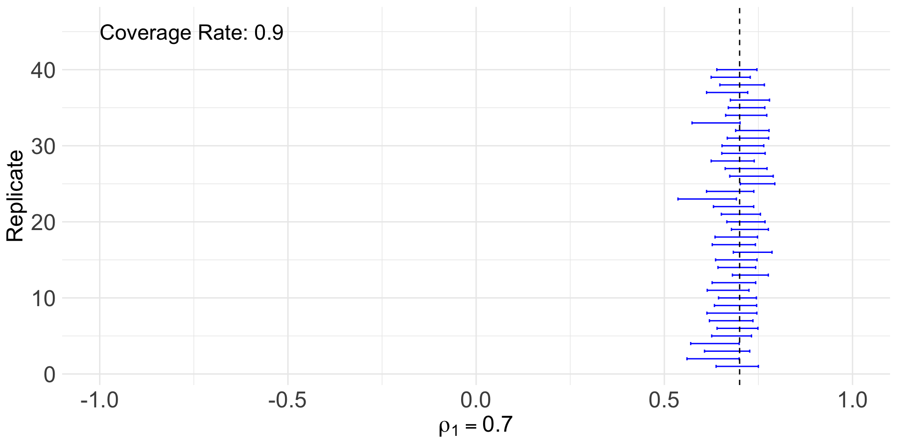
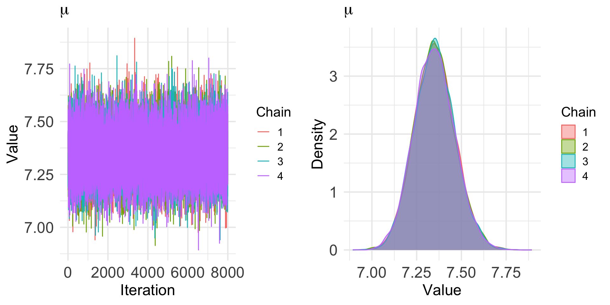
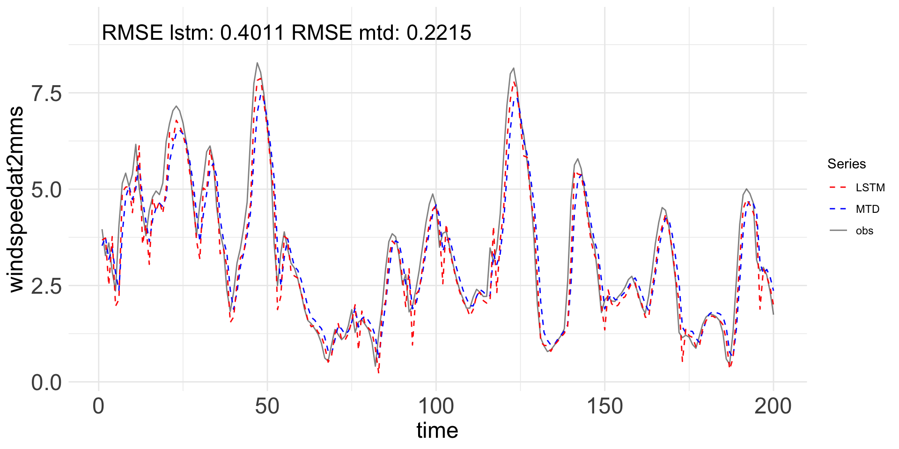

Copula-Based Mixture Transition Distribution Models for Forecasting Skewed and Zero-Inflated Time Series: Methodology and Comparisons with Deep Learning LSTM Networks
Frances Lin
üõ° Dissertation Defense
ü¶´ Oregon State University
November 5, 2025
Co-Advisors: Dr. Lisa Madsen, Dr. Charlotte Wickham
Committee Members: Dr. James Molyneux, Dr. Claudio Fuentes, Dr. Prasad Tadepalli
Motivation
Modeling complex patterns in sequence data is a central task across domains such as energy, insurance, and transportation.
- ⚠️ Real-world time series often show skewness and zero inflation, which can undermine performance if not properly addressed.
Recent AI advances, such as Recurrent Neural Networks (RNNs) and Long Short-Term Memory (LSTM) networks, effectively capture nonlinear and long-range dependence.
⚠️ Claims of LSTM superiority can be misleading when compared to inappropriate benchmarks.
⚠️ A prior work found comparable performance between probabilistic Mixture Transition Distribution (MTD) model and deep learning LSTM for predicting, e.g., disease spread.


¬©Ô∏è NASA GES DISC üìç Limon Wind Energy Center, Colorado
NASA MERRA-2 Data Hourly Wind Speeds, Key Proxy for Energy Forecasting

Objectives
Part I and II of the dissertation
Develop the copula-based Gamma Mixture Transition Distribution (Gamma MTD) model and its zero-inflated extension (ZIGamma MTD) to capture high-order dependence, skewed behavior, and semicontinuous patterns.
Part III of the dissertation
Evaluate the proposed models alongside deep learning approaches, specifically the Long Short-Term Memory (LSTM) networks, demonstrating higher predictive accuracy and robustness.
Roadmap
Part I Models for Forecasting Skewed Time Series
Recap of MTD Models
What’s New
Part II Models for Forecasting Zero-Inflated Skewed Time Series
Introduction
Proposed Method
Simulation Studies
Prediction
Roadmap
Part III Copula-Based Probabilistic MTD Models vs. Deep Learning LSTM Networks
Introduction
Training, Hyperparameter Tuning, and Metrics
(Skip) Simulation Studies
Data Application
Part I Models for Forecasting Skewed Time Series
Introduction
Time series model captures how past values contribute to current value and uses this information to predict future value.
The mixture transition distribution (MTD) models
Extend the autoregressive (AR) models to accommodate non-Gaussian and nonlinear features.
Model high-order dependence as a mixture of first-order transition kernels, with random, stochastic weights.
See Berchtold and Raftery (2022) for a complete review.
Introduction and Objectives
Our work builds upon the architecture of the MTD model introduced by Zheng et al. (2022).
- Includes various applications, such as Gaussian, Poisson, negative binomial, and Lomax regression MTD models, extending beyond linear, Gaussian dynamics.
However, for certain invariant marginal distributions, the transition kernel may either require careful construction or can result in a form that is not explicitly defined or too complex.
Objectives: Propose to incorporate copulas into the transition kernels to address this limitation, thereby enhancing modeling capabilities and flexibility.
Develop the Gamma MTD model, but the framework is general.
Model Framework: DAG; also known as Bayesian Network
Let \(\{ X_t: t \in \mathbb{N} \}\) be a time series. Construct the model on a DAG, the joint distribution of \(X_1\) to \(X_t\) can be factorized into a product of conditional distributions as
\[\begin{equation} f(\textbf{x}) = f(x_1) \prod_{t=2}^t f(x_t | \textbf{x}^{t-1}). \tag{1} \label{eq:joint_distribution} \end{equation}\]\(f(x_t | \textbf{x}^{t-1})\) is the conditional probability density function (pdf) of current value \(X_t\) given all of its past values \(\textbf{X}^{t-1} = \textbf{x}^{t-1}\), where \(\textbf{X}^{t-1} = \{X_i: i \leq t - 1 \}\) and \(\textbf{x}^{t-1} = \{x_i: i \leq t - 1 \}\).
As \(t\) increases, the size of the conditioning set, \(\textbf{X}^{t-1}\) (all of its past values), can be large.
- Solution: Use a structured mixture model that restricts each value in the MTD model to depend only on the \(L\) (a given number) lagged values.
Each conditional in (1) is modeled as a mixture of transition kernels, with weight assigned to each of the \(L\) lagged values.
MTD Order (Look-Back Steps) \(L = 5\)
Model Framework: Transition Kernels and Mixture Weights
For \(t > L\), the MTD model specifies the conditional distribution of \(X_t\) given \(\textbf{X}^{t-1} = \textbf{x}^{t-1}\) as
\[\begin{equation} f(x_t | \textbf{x}^{t-1}) = \sum_{l=1}^L w_l f_l (x_t | x_{t-l}). \tag{2} \label{eq:cond_distribution} \end{equation}\]\(f_l (x_t | x_{t-l})\) is the conditional pdf of \(X_t\) with respect to the \(l\)th transition kernel given that \({X}_{t-l} = {x}_{t-l}\). \(w_l\) are weight parameters, where \(w_l \geq 0\) such that \(\sum_{l=1}^L w_l = 1\).
There are two components in (2):
Transition kernel, \(f_l\), captures the influence of the \(l\)th lag value on the current value.
Weight parameter, \(w_l\), determines the relative contribution of that influence.
©️ Yuvraj Deshmukh ⏭️ Copula
Copula
Copula is widely used for dependence modeling.
Is applied in quantitative finance, reliability engineering, hydrology, etc.
Consists of families of copula, constituting a substantial research area.
Copula is a multivariate cumulative distribution function (cdf) where its marginal distribution of each random variables is \(\text{Unif}(0, 1)\).
Using copula, any joint distribution, \(F\), can be decomposed into two parts: the copula, \(C\), and the marginal distributions, \(F_j\), \(j = 1,..., p\).
- Rooted in Sklar’s theorem. 1
Existing Method to Proposed Method
The bivariate distribution approach, for example, identifies a bivariate distribution of \((U_l, V_l)\) such that the marginal densities, \(f_{U_l}\) and \(f_{V_l}\), are equal to a pre-specified stationary marginal density \(f_X\) for all \(l\) transition kernels.
- Based on Proposition 1 1 of Zheng et al. (2022).
This is facilitated by the use of a copula,
- which separates the marginal behavior of the random variables from their dependence structure.
Proposed Method
Replace \(f_{U_l}\) and \(f_{V_l}\) with a pre-specified stationary marginal density, \(f_X\), for every \(x_t\) and for all \(l\). For \(t > L\), the proposed copula-based MTD model specifies the conditional distribution as
\[\begin{equation} f(x_t | \textbf{x}^{t-1}) = \sum_{l=1}^L w_l c_l (x_t, x_{t-l}) f_X(x_t). \tag{3} \label{eq:cond_distribution_copula} \end{equation}\]\(c_l (x_t, x_{t-l})\) is the copula density evaluated at \(x_t\) and \(x_{t-l}\), and \(f_X(x_t)\) is the stationary marginal density evaluated at \(x_t\).
Compared to (2), the transition kernel, \(f_l\), is now replaced by two components:
Copula density, \(c_l\), captures and controls the strength of the dependence through a dependence parameter.
Stationary marginal density, \(f_X\), describes the marginal behavior through distribution parameters.
Bayesian Implementation
Earlier MTD models were built through frequentist approaches.
Estimation and prediction in the MTD model by Zheng et al. (2022) is constructed with Bayesian methodologies.
Our proposed copula-based MTD model builds upon this model version.
We consider the Gaussian copula with Gamma marginals, i.e., Gamma MTD model, but the framework is generalizable, e.g.,
Lognormal MTD model or for any continuous distribution.
Clayton copula or any other copula-based MTD model.
Bayesian Implementation
Inference is facilitated through a set of latent variables \({\{Z_t\}}_{t=L+1}^n\). \(Z_t = l\) indicates which \(l\)th kernel the data belongs to.
The posterior distribution of the parameters, based on the conditional likelihood, is
\[\begin{equation} \begin{split} p(\boldsymbol{w}, \boldsymbol{\theta}, {\{z_t\}}_{t=L+1}^n | D_n) \propto \pi_w(\boldsymbol{w}) \prod_{l=1}^L \pi_l(\boldsymbol{\theta}_l) \\ \prod_{t=L+1}^n \Biggl\{ f_{z_t} (x_t | x_{t-z_t}, \boldsymbol{\theta}_{z_t}) \sum_{l=1}^L w_l \delta_l(z_t) \Biggl\}. \end{split} \tag{4} \end{equation}\]\(\boldsymbol{w}\) is the mixture weights. \(\boldsymbol{\theta}\) collects parameters for the transition kernel. \(D_n = {\{x_t\}}_{t=L+1}^n\) is the data.
With priors specifications 1, the full simulation-based Bayesian estimation and prediction can be achieved using Markov chain Monte Carlo (MCMC) algorithms.
Simulation Studies
We have assessed accuracy and performance of the proposed model.
Convergence Diagnostics (\(\boldsymbol{w}\), \(\boldsymbol{\rho}\), \(\alpha\), \(\beta\))
Weight and Dependence Parameters for Copula (\(\boldsymbol{w}\), \(\boldsymbol{\rho}\))
Parameters for Marginal Distribution (\(\alpha\), \(\beta\))
Simulation studies demonstrate promising results across various scenarios.
Scenario 1 and 2: Default setup; Compatible \(\boldsymbol{w}\) and \(\boldsymbol{\rho}\)
Scenario 1.3 and 1.4: Incompatible \(\boldsymbol{w}\) and \(\boldsymbol{\rho}\)
Scenario 1.5 and 1.6: Compatible \(\boldsymbol{w}\) and \(\boldsymbol{\rho}\); Rarely observable patterns
Scenario 3-6: Usual case for gamma marginals
Scenario 7-9: Unusual case involving high skewness
Weight and Dependence Parameters for Copula 1
Parameters for Marginal Distribution

What’s New
Since the preliminary exam, we have also conducted:
Sensitivity Analysis
Coverage Assessment
Prediction
We are not gonna discuss them here.
Part II Models for Forecasting Zero-Inflated Skewed Time Series
Introduction
Zero-inflated data are characterized by an excess of zero values and frequently appear in domains such as healthcare, insurance, environment, and transportation.
Examples include
medical costs,
insurance claims,
precipitation amounts, and
safety measures.
If left unaddressed, zero-inflation undermines model robustness and weakens inference.
Introduction and Objectives
In Part I, we propose the copula-based Gamma MTD model, which enables flexible dependence modeling and accommodates arbitrary continuous marginals.
However,
it remains limited in handling excessive zeros commonly observed in real-world continuous data.
Copula-based approaches face identifiability issues when modeling discrete or mixed marginals.
Objectives: Propose reconstructing the marginal distribution to accommodate zero-inflation, while maintaining the same effectiveness and flexibility in modeling dependence structures as described in Part I.
Develop the ZIGamma MTD model, but the framework is again general.
Existing Method to Proposed Method
Our approach is similar to hurdle models, one of the two primary frameworks for zero-inflated data, where zeros occur only in the binary part.
Instead of generating exact zeros, our approach applies a soft threshold that replaces them with small non-zero values.
Based on the continuous extension (CE) approach by Denuit and Lambert (2005).
Has only been applied in discrete and spatial settings, not in our setting.
Proposed Method
To construct zero-inflated Gamma for the marginal distribution,
- The Gamma distribution is first reparametrized in terms of the mean, \(\mu\), and the scale parameter, \(\beta\). Specifically,
where \(\frac{\mu}{\beta} > 0\) denotes the shape and \(\beta > 0\) the scale parameter.
Proposed Method
- Zero values are then replaced with non-zero values drawn from a uniform distribution. Specifically,
where \(U_i\) follows a continuous uniform distribution on \((0, \epsilon)\) with \(\epsilon\) is a data-driven paramater representing the smallest observed non-zero values.
Proposed Method
The resulting distribution, denoted as \(\text{ZIGamma}(\mu, \beta, P, \epsilon)\), is expressed as:
\[\begin{equation} f(x) = \begin{cases} \text{Unif}(0, \epsilon) & \text{with probability } P \\ \text{ShiftedGamma}(\mu, \beta; \epsilon) & \text{with probability } 1-P, \end{cases} \tag{7} \end{equation}\]where \(\mu\) denotes the mean and \(\beta\) the scale parameter of the shifted Gamma distribution, \(P \in [0, 1]\) the zero-inflated probability, and \(\epsilon > 0\) the threshold parameter.
In (7), there are two parts:
We have already discussed the uniform distribution.
The shifted Gamma distribution 1, \(\text{ShiftedGamma}(\mu, \beta; \epsilon)\), is a standard Gamma distribution with mean \(\mu\) and scale \(\beta\) that is shifted to the right by \(\epsilon\), with the support \([\epsilon, \infty)\).
dzig (pdf of zigamma)


pzig (cdf of zigamma)


¬©Ô∏è FSP Group üôè OSU Advanced Research Computing Services, e.g., COSINE and Novus Clusters
Simulation Setting
Simulated data:
- With weight \(\boldsymbol{w}\), dependence for Gaussian copula \(\boldsymbol{\rho}\), mean \(\mu\), scale \(\beta\), zero-inflated probability \(P\), and threshold parameter \(\epsilon\), we generate \(n = 2000\) observations from the copula-based ZIGamma MTD model.
Model fitting:
- Set the order \(L = 5\) and consider the Gaussian copula with zero-inflated Gamma marginals.
MCMC setting:
Run the Gibbs sampler for \(165, 000\) iterations, discard the first \(5000\) iterations as burn-in, and collect samples every \(20\) iterations.
Run \(4\) MCMC chains with \(8000\) iterations each for all of the following scenarios.
Simulation Studies
We have assessed accuracy and performance of the proposed model.
Convergence Diagnostics (\(\boldsymbol{w}\), \(\boldsymbol{\rho}\), \(\mu\), \(\beta\), \(P\), \(\epsilon\))
Weight and Dependence Parameters for Copula (\(\boldsymbol{w}\), \(\boldsymbol{\rho}\))
Parameters for Marginal Distribution (\(\mu\), \(\beta\), \(P\), \(\epsilon\))
Simulation studies demonstrate promising results across various scenarios.
Scenario 1 and 2: Default setup; Compatible \(\boldsymbol{w}\) and \(\boldsymbol{\rho}\)
Scenario 3-6: Usual case for zero-inflated gamma marginals
Scenario 7-9: Unusual case involving high skewness
Simulation Studies
In all nine scenarios (s1-9), we vary \(P\) (zero-inflated probability) and \(\epsilon\) (threshold value), resulting in six cases per scenario:
\(P = 0.1\), \(\epsilon = 0.1\)
\(P = 0.1\), \(\epsilon = 0.4\)
\(P = 0.5\), \(\epsilon = 0.1\)
\(P = 0.5\), \(\epsilon = 0.4\)
\(P = 0.7\), \(\epsilon = 0.1\)
\(P = 0.7\), \(\epsilon = 0.4\)
For brevity, we present Scenario 1 only.
Simulation Results 1 2
| . | Mean (SD) | R (Upper CI) | Naive SE | Time-series SE |
|---|---|---|---|---|
| \(w_1 = 0.636\) | 0.6395 (0.0425) | 1 (1) | 2e-04 | 0.0003 |
| \(w_2 = 0.234\) | 0.1905 (0.0636) | 1.01 (1.01) | 4e-04 | 0.0013 |
| \(w_3 = 0.086\) | 0.1315 (0.0739) | 1 (1) | 4e-04 | 0.0021 |
| \(w_4 = 0.032\) | 0.0346 (0.0529) | 1.01 (1.03) | 3e-04 | 0.0017 |
| \(w_5 = 0.012\) | 0.0039 (0.0171) | 1 (1) | 1e-04 | 0.0004 |
| . | Mean (SD) | R (Upper CI) | Naive SE | Time-series SE |
|---|---|---|---|---|
| \(\rho_1 = 0.700\) | 0.6847 (0.0274) | 1 (1) | 0.0002 | 0.0002 |
| \(\rho_2 = 0.500\) | 0.606 (0.1426) | 1.01 (1.01) | 0.0008 | 0.0027 |
| \(\rho_3 = 0.300\) | 0.1168 (0.2389) | 1 (1) | 0.0013 | 0.0018 |
| \(\rho_4 = 0.100\) | 0.0147 (0.4675) | 1 (1) | 0.0026 | 0.0027 |
| \(\rho_5 = 0.100\) | -0.0046 (0.5659) | 1 (1) | 0.0032 | 0.0032 |
Simulation Results 1
- \(P = 0.1\) \(\epsilon = 0.1\)
- \(P = 0.1\) \(\epsilon = 0.4\)
- \(P = 0.5\) \(\epsilon = 0.1\)
- \(P = 0.5\) \(\epsilon = 0.4\)
- \(P = 0.7\) \(\epsilon = 0.1\)
- \(P = 0.7\) \(\epsilon = 0.4\)
| . | Mean (SD) | R (Upper CI) | Naive SE | Time-series SE |
|---|---|---|---|---|
| \(\mu\) | 7.35 (0.1132) | 1 (1) | 6e-04 | 6e-04 |
| \(\beta\) | 1.0082 (0.0433) | 1 (1) | 2e-04 | 2e-04 |
| \(P\) | 0.0769 (0.0085) | 1 (1) | 0e+00 | 0e+00 |
| \(\epsilon\) | 0.1 (7e-04) | 1 (1) | 0e+00 | 0e+00 |
| . | Mean (SD) | R (Upper CI) | Naive SE | Time-series SE |
|---|---|---|---|---|
| \(\mu\) | 7.1454 (0.12) | 1 (1) | 7e-04 | 7e-04 |
| \(\beta\) | 1.0994 (0.0472) | 1 (1) | 3e-04 | 3e-04 |
| \(P\) | 0.1091 (0.0103) | 1 (1) | 1e-04 | 1e-04 |
| \(\epsilon\) | 0.4017 (0.0019) | 1 (1) | 0e+00 | 0e+00 |
| . | Mean (SD) | R (Upper CI) | Naive SE | Time-series SE |
|---|---|---|---|---|
| \(\mu\) | 6.9447 (0.1207) | 1 (1) | 7e-04 | 7e-04 |
| \(\beta\) | 1.0659 (0.0542) | 1 (1) | 3e-04 | 3e-04 |
| \(P\) | 0.5248 (0.0172) | 1 (1) | 1e-04 | 1e-04 |
| \(\epsilon\) | 0.1001 (1e-04) | 1 (1) | 0e+00 | 0e+00 |
| . | Mean (SD) | R (Upper CI) | Naive SE | Time-series SE |
|---|---|---|---|---|
| \(\mu\) | 6.8454 (0.1154) | 1 (1) | 6e-04 | 6e-04 |
| \(\beta\) | 1.0086 (0.0512) | 1 (1) | 3e-04 | 3e-04 |
| \(P\) | 0.5064 (0.0173) | 1 (1) | 1e-04 | 1e-04 |
| \(\epsilon\) | 0.4 (4e-04) | 1 (1) | 0e+00 | 0e+00 |
| . | Mean (SD) | R (Upper CI) | Naive SE | Time-series SE |
|---|---|---|---|---|
| \(\mu\) | 6.988 (0.1303) | 1 (1) | 7e-04 | 7e-04 |
| \(\beta\) | 0.9593 (0.0594) | 1 (1) | 3e-04 | 3e-04 |
| \(P\) | 0.6879 (0.016) | 1 (1) | 1e-04 | 1e-04 |
| \(\epsilon\) | 0.0999 (1e-04) | 1 (1) | 0e+00 | 0e+00 |
| . | Mean (SD) | R (Upper CI) | Naive SE | Time-series SE |
|---|---|---|---|---|
| \(\mu\) | 6.8482 (0.1373) | 1 (1) | 8e-04 | 8e-04 |
| \(\beta\) | 1.0506 (0.0665) | 1 (1) | 4e-04 | 4e-04 |
| \(P\) | 0.7048 (0.0154) | 1 (1) | 1e-04 | 1e-04 |
| \(\epsilon\) | 0.4002 (3e-04) | 1 (1) | 0e+00 | 0e+00 |
Coverage Assessment
All nine scenarios (s1-9) were analyzed using \(4\) chains with only one replicate.
- Recall that we have six cases per scenario.
Scenarios 1 and 2 were further evaluated with \(40\) replicates to assess coverage and robustness.
The overall coverage is the proportion of replicates for which the true value is contained within the interval.
Most parameters achieve full coverage, with a few slightly below \(1\), indicating that the posterior intervals reliably capture the true parameter values.
Coverage Assessment for Scenario 1 and 2, 40 Replicates 1 2
| \(\mu\) | \(\beta\) | \(P\) | \(\epsilon\) | \(w_1\) | \(w_2\) | \(w_3\) | \(w_4\) | \(w_5\) | \(\rho_1\) | \(\rho_2\) | \(\rho_3\) | \(\rho_4\) | \(\rho_5\) | |
|---|---|---|---|---|---|---|---|---|---|---|---|---|---|---|
| P01eps01 | 0.950 | 0.925 | 0.950 | 0.925 | 0.925 | 0.925 | 1.000 | 1.000 | 1.000 | 0.875 | 1.000 | 1 | 0.975 | 1 |
| P01eps04 | 0.975 | 0.975 | 0.975 | 0.925 | 0.950 | 0.950 | 0.975 | 1.000 | 0.975 | 0.975 | 1.000 | 1 | 0.975 | 1 |
| P05eps01 | 0.950 | 0.950 | 0.925 | 0.975 | 0.875 | 0.950 | 1.000 | 1.000 | 0.925 | 0.925 | 1.000 | 1 | 1.000 | 1 |
| P05eps04 | 0.975 | 0.925 | 0.950 | 1.000 | 0.950 | 1.000 | 1.000 | 1.000 | 0.925 | 0.875 | 0.975 | 1 | 1.000 | 1 |
| P07eps01 | 0.950 | 0.950 | 0.925 | 0.975 | 1.000 | 1.000 | 1.000 | 1.000 | 0.950 | 0.925 | 1.000 | 1 | 1.000 | 1 |
| P07eps04 | 0.925 | 1.000 | 1.000 | 0.925 | 0.950 | 0.925 | 0.950 | 0.975 | 0.950 | 1.000 | 0.975 | 1 | 0.975 | 1 |
| \(\mu\) | \(\beta\) | \(P\) | \(\epsilon\) | \(w_1\) | \(w_2\) | \(w_3\) | \(w_4\) | \(w_5\) | \(\rho_1\) | \(\rho_2\) | \(\rho_3\) | \(\rho_4\) | \(\rho_5\) | |
|---|---|---|---|---|---|---|---|---|---|---|---|---|---|---|
| P01eps01 | 0.925 | 0.950 | 0.925 | 0.900 | 1 | 0.975 | 0.975 | 1 | 0.975 | 1.000 | 0.975 | 0.975 | 1 | 0.975 |
| P01eps04 | 0.875 | 0.950 | 0.950 | 0.875 | 1 | 1.000 | 0.975 | 1 | 0.925 | 0.975 | 0.950 | 0.975 | 1 | 1.000 |
| P05eps01 | 0.925 | 0.950 | 0.950 | 0.950 | 1 | 1.000 | 0.975 | 1 | 0.950 | 1.000 | 0.975 | 1.000 | 1 | 0.975 |
| P05eps04 | 0.950 | 0.975 | 0.875 | 0.975 | 1 | 1.000 | 0.925 | 1 | 0.975 | 1.000 | 1.000 | 1.000 | 1 | 0.975 |
| P07eps01 | 0.950 | 0.950 | 0.900 | 0.975 | 1 | 1.000 | 0.975 | 1 | 0.875 | 1.000 | 0.950 | 0.950 | 1 | 0.900 |
| P07eps04 | 0.975 | 0.950 | 0.975 | 0.950 | 1 | 1.000 | 1.000 | 1 | 0.975 | 1.000 | 0.975 | 0.975 | 1 | 1.000 |
Prediction, \(95\%\) Predictive Intervals, One-Step Ahead
| Coverage | Below | Above | |
|---|---|---|---|
| P01Eps01 | 0.9549 | 0.6944 | 0.9751 |
| P01Eps04 | 0.9148 | 0.3973 | 0.9786 |
| P05Eps01 | 0.9278 | 0.9876 | 0.8615 |
| P05Eps04 | 0.9484 | 0.9681 | 0.9285 |
| P07Eps01 | 0.8677 | 0.9943 | 0.5726 |
| P07Eps04 | 0.9298 | 0.9888 | 0.7828 |
When the zero-inflated probability is low (e.g., \(P = 0.1\)), the empirical coverage above (i.e., the coverage for data greater than \(\epsilon\)) is a more informative metric for assessing predictive performance.
As \(P\) increases (e.g., \(P = 0.5\), \(0.7\)), the empirical coverage below becomes increasingly dominant.
The model appropriately captures the predictive uncertainty across all cases.
Prediction, \(95\%\) Predictive Intervals, One-Step Ahead

Part III Copula-Based Markov MTD Models vs. Deep Learning LSTM Networks
Introduction
Recurrent Neural Networks (RNNs), and their variants, Long Short-Term Memory (LSTMs), are widely used for modeling sequence data because of their ability to capture both short- and long-term dependencies.
Beyond natural language processing (NLP), RNNs and LSTMs have also shown effective in time series forecasting and have been employed for applications including
financial market prediction,
energy forecasting,
weather and climate modeling, and
epidemiological trend analysis.
Introduction and Objectives
However,
previous studies comparing LSTMs to traditional models such as ARIMA often claim LSTM superiority, a conclusion that can be misleading when the benchmarks chosen are inappropriate.
A prior study found comparable performance between the MTD model and the LSTM network for predicting disease spread.
Objectives: Evaluate LSTM and MTD models to ensure a fair and balanced comparison of their performance and robustness.
Demonstrate that our proposed MTDs outperform LSTMs in accuracy, though at a higher computational cost and the need for more careful design.
Jump to Data Application (Section 6)
RNN (Recurrent Neural Network)

An RNN unit computes a weighted combination of input data, \(x_t\), and the previous hidden state, \(h_{t-1}\), applies an activation function, and updates the hidden state to \(h_t\).
RNN is composed of repeating units that unfold over time, where each unit passes recurrent information stored in the hidden state from one time step to the next.
RNN is prone to the well-documented vanishing gradient issue when training on long sequences.
LSTM (Long Short-Term Memory)

LSTM extends RNN by introducing a cell state and three gates: the forget gate, the input gate, and the output gate.
The cell state carries long-term dependence, while the hidden state encodes short-term patterns.
The gates control information flow, deciding what to forget, add, and pass to the hidden state at each step.
Training and Hyperparameter Tuning
The network is typically trained using Backpropagation Through Time (BPTT) and optimized with gradient-based methods such as Stochastic Gradient Descent (SGD) and Adaptive Moment Estimation (Adam).
Hyperparameter tuning plays a crucial role in improving model performance. Key hyperparameters include:
batch size,
number of epochs,
learning rate
number of hidden units or cell dimension,
number of hidden layers, etc.
Simulation Studies
Experimental Setup
Experiment 1:
- We run both models on Gamma Scenario 1–9 to compare the predictive performance of the LSTM and MTD models under various conditions.
Experiment 2:
- We run both models on 10 independently generated replicates of Gamma Scenario 1 to assess the stability and robustness of model performance.
Experiment 3:
- We run the LSTM model on 10 independently generated replicates of Gamma Scenario 1 for a variety of configurations (e.g., batch size, learning rate, cell dimention, hidden layer) to investigate the impact of hyperparameters.
Experimental Setup
Experiment 4:
- For the zero-inflated Gamma settings, we run both models on Scenario 1 and 2, since each scenario includes six cases defined by all combinations of \(P = 0.1, 0.5, 0.7\), and \(\epsilon = 0.1, 0.4\).
Simulation Results for Gamma Scenarios 1-9
| . | LSTM | MTD |
|---|---|---|
| s1 | 1.3326 | 1.3569 |
| s2 | 2.3001 | 2.1988 |
| s3 | 1.07 | 1.0446 |
| s4 | 1.6846 | 1.5282 |
| s5 | 1.0215 | 1.1296 |
| s6 | 0.8263 | 0.7649 |
| s7 | 0.7452 | 0.7617 |
| s8 | 0.3675 | 0.3808 |
| s9 | 0.1837 | 0.1902 |
RMSEs for MTD are lower in Scenarios 2, 3, 4, and 6, though the differences are minimal.
RMSEs are the highest for both models in Scenario 2.
Simulation Results for Gamma Scenario 1, 10 replicates

- RMSE has a mean difference of \(0.1290\) (
p-value = 0.005175,df = 9), with MTD consistently yielding lower RMSEs.
Simulation Results for Gamma Scenario 1, 10 replicates
Batch size is significant (
Pr(>F) = 4.4e-06,df = 2, 24); RMSEs differ only for \(64\) vs. others, and \(128\) vs. others.Cell dimensions too (
Pr(>F) = 0.0113,df = 2, 24); RMSE differs only between \(32\) vs. \(64\) and \(32\) vs. \(128\).We adopt the default configuration for subsequent experiments:
learning rate = \(0.001\),
batch size = \(32\),
number of layers = \(1\), and
cell dimension = \(64\).

©️ Akin Bostanci ⏸️ … Quick Visual Break
Simulation Results for ZIGamma Scenario 1
| . | LSTM | MTD |
|---|---|---|
| P01Eps01 | 1.7221 | 1.7302 |
| P01Eps04 | 2.0843 | 2.6386 |
| P05Eps01 | 2.1102 | 2.8361 |
| P05Eps04 | 2.1788 | 2.1922 |
| P07Eps01 | 2.2762 | 3.0739 |
| P07Eps04 | 2.0916 | 2.5798 |
LSTM generally achieves lower overall RMSEs compared to MTD.
❗️But, patterns similar to those in Prediction of Part II (Section 2.16) reappear.
Simulation Results for ZIGamma Scenario 1
| . | LSTM Below | MTD Below | LSTM Above | MTD Above |
|---|---|---|---|---|
| P01Eps01 | 3.6285 | 4.2964 | 1.4910 | 1.3668 |
| P01Eps04 | 3.2122 | 5.9082 | 1.8826 | 1.7945 |
| P05Eps01 | 2.0551 | 0.7752 | 2.1655 | 3.9641 |
| P05Eps04 | 2.0495 | 1.6675 | 2.3426 | 2.7477 |
| P07Eps01 | 1.2984 | 0.3677 | 3.5798 | 5.458 |
| P07Eps04 | 1.2583 | 0.5346 | 3.3044 | 4.6465 |
When the zero-inflated probability is low (e.g., \(P = 0.1\)), the RMSE above (which reflects predictive accuracy for values exceeding \(\epsilon\)) is a more informative metric for assessing predictive performance.
As \(P\) increases (e.g., \(P = 0.5\), \(0.7\)), this relationship reverses, and the RMSE below becomes more relevant.
MTD outperforms LSTM in RMSE above for \(P = 0.1\) and again yields lower values for RMSE below than LSTM at higher levels of zero-inflation (e.g., \(P = 0.5\), \(0.7\)).
Data Application
Experimental Setup
MTD
For MTD, the hyperparameter settings are:
marginal parameters \(\alpha\), \(\beta\) 1: \(Gamma(\alpha | u_{\alpha}, v_{\alpha} = 1)\), \(Gamma(\beta | u_{\beta}, v_{\beta} = 1)\),
dependence parameter \(\rho\): \(Unif(\rho_l | -1, 1)\), and
weight parameter \(w\) 2: \(CDP(w | \alpha_0 = 5, a_0 = 1, b_0 = 3)\); cdf-based Dirichlet process prior.
- MTD is implemented in
Rand executed on a high-performance computing (HPC) cluster.
LSTM
For LSTM, we reuse the default configuration for these hyperparameters:
learning rate = \(0.001\),
batch size = \(32\),
number of layers = \(1\), and
cell dimension = \(64\).
LSTM is implemented in
PyTorchand trained on a standard workstation.
Evaluation Metrics 1
| Metric | Definition | Formula |
|---|---|---|
| RMSE | Root Mean Squared Error | \(\sqrt{\frac{1}{T} \sum_{t=1}^{T} (y_t - \hat{y}_t)^2}\) |
| MAE | Mean Absolute Error | \(\frac{1}{T} \sum_{t=1}^{T} |y_t - \hat{y}_t|\) |
| MAPE | Mean Absolute Percentage Error | \(\frac{100}{T} \sum_{t=1}^{T} \left| \frac{y_t - \hat{y}_t}{y_t} \right|\) |
| SMAPE | Symmetric MAPE | \(\frac{100}{T} \sum_{t=1}^{T} \frac{|y_t - \hat{y}_t|}{(|y_t| + |\hat{y}_t|) / 2}\) |
| MASE | Mean Absolute Scaled Error | \(\frac{ \frac{1}{T} \sum_{t=1}^{T} |y_t - \hat{y}_t| }{ \frac{1}{T - 1} \sum_{t=2}^{T} |y_t - y_{t-1}| }\) |
Evaluation Results
| . | LSTM | MTD |
|---|---|---|
| RMSE | 0.6359 | 0.3508 |
| MAE | 0.6021 | 0.2692 |
| MAPE | 11.1103 | 4.255 |
| SMAPE | 9.9305 | 4.2051 |
| MASE | 0.6595 | 0.366 |
| . | LSTM | MTD |
|---|---|---|
| RMSE | 0.4607 | 0.2376 |
| MAE | 0.3692 | 0.1614 |
| MAPE | 11.2891 | 4.0688 |
| SMAPE | 10.2499 | 3.9569 |
| MASE | 0.6194 | 0.2873 |
| . | LSTM | MTD |
|---|---|---|
| RMSE | 0.4011 | 0.2215 |
| MAE | 0.2696 | 0.1543 |
| MAPE | 11.6386 | 6.5935 |
| SMAPE | 12.6050 | 6.2548 |
| MASE | 0.6660 | 0.3537 |
Predicted Means 1, One-Step Ahead; Full Test Size \(n = 1756\)


Predicted Means 1, One-Step Ahead; Zoom-In View \(n = 200\)

Prediction Errors 1, One-Step Ahead; Zoom-In View \(n = 200\)


\(95\%\) Predictive Intervals, One-Step Ahead; Full Test Size \(n = 1756\); MTD Only
| . | Coverage |
|---|---|
| windspeed50mms | 0.9522 |
| windspeed10mms | 0.9562 |
| windspeed2mms | 0.9567 |
Empirical coverage is particularly relevant and can only be assessed with probabilistic forecasting methods such as MTD.
The model appropriately captures the predictive uncertainty across wind speeds at all heights.
\(95\%\) Predictive Intervals, One-Step Ahead; Full Test Size \(n = 1756\); MTD Only


©️ Getty Images ⏯️ Conclusion
Conclusion
Part I and II
We develop a novel copula-based MTD model that separates the dependence structure from the marginal distribution. This separation
Enables a choice of copula families that effectively capture dependence.
Provides flexibility in marginal selection.
We also develop a copula-based zero-inflated MTD model, which preserves the advantages of copula modeling for capturing dependence in zero-inflated continuous settings.
- This extension again demonstrates the framework’s generalizability beyond Gamma marginals, e.g., lognormal, beta .
Conclusion
Part III
Through simulation studies and data application,
MTD models are more robust and explainable but come at the cost of increased computational time and more involved model design.
LSTMs are general-purpose and efficient, but their black-box nature can limit interpretability and, in some cases, reduce accuracy.
Overall, our proposed MTD models provides a flexible, robust, and interpretable approach for modeling complex continuous and zero-inflated time series, demonstrating better performance compared to LSTM in the settings considered.

©️ Shutterstock ⏯️ Future Work
Future Work
Part I and II
Both the Gamma MTD and ZIGamma MTD models utilize Gaussian copula to model dependence. Future work should explore alternative copulas, like Clayton and Gumbel, to capture tail dependence and asymmetry.
Although the current framework assumes stationarity and does not incorporate covariates, it can be readily extended by introducing extra model components in the conditional mean structure to enhance flexibility and realism in modeling complex temporal patterns.
We use MCMC as our primary estimation method, but alternative approaches such as Variational Inference or Sequential Monte Carlo could be explored.
Future Work
Part III
Given the growing prominence of transformer architectures in sequence modeling, further research should extend performance comparisons to include transformer-based models.
It is equally important to ensure that evaluations are conducted using appropriate benchmarks and metrics.
Thank you!
Acknowledgement
Thank you to Lisa Madsen and Charlotte Wickham, for your dedication, support, and inspiration throughout the process.
Thank you to my committee memebers, James Molyneux, Claudio Fuentes, and Prasad Tadepalli, for the time you dedicated and valuable feedback.
Thank you to Xiaotian Zheng for being incredibly generous with your time and advices.
Thank you to my family, my mom, dad, and brother, for your occational financial support and for your patience and understanding througout the journey.
Thank you to my friends, including my cohort, for your emotional support and for always being there, from late-night talks and fun hikes to ski trips and random food adventures.
Special thanks to my partner, Joseph, for your timely distractions and annoyances.
Thank you to many others.
Acknowledgement


References
Berchtold, A., & Raftery, A. (2002). “The mixture transition distribution model for high-order Markov chains and non-Gaussian time series”. Statistical Science, Vol. 17 No. 3, pp. 328–356.
Denuit, Michel, and Lambert, Philippe. 2005. “Constraints on Concordance Measures in Bivariate Discrete Data.” Journal of Multivariate Analysis 93 (1): 40–57.
Sklar, M (1959). “Fonctions de repartition a n dimensions et leurs marges”, Annales de l’ISUP. 420 Vol. 8. No. 3, pp. 229–231.
Zheng, Xiaotian, Kottas, Athanasios, and Sanso, Bruno (2022). “On construction and estimation of stationary mixture transition distribution models”, Journal of Computational and Graphical Statistics, Vol. 31 No. 1, pp. 283–293.
…
Supplement
Copula CDF and PDF
Wireframe plot of bivariate Gaussian distribution and density function, reproduced from Kenton (2024). Retrieved from https://www.investopedia.com/terms/c/copula.asp.
Copula Families
Contour plot of different bivariate density function where marginals are \(N(0, 1)\), reproduced from Chang (2019). Retrieved from https://bochang.me/blog/posts/copula/.
Sklar’s Theorem
For any \(p\)-dimensional multivariate cumulative distribution function (cdf) of a random vector \((X_1, ..., X_p)\), denoted as \(F(x_1, ..., x_p)\), there exists a copula function \(C: {[0,1]}^p \rightarrow [0, 1]\) for which \(F(x_1, ..., x_p) = C(F_1(x_1), ..., F_p(x_p))\), where \(F_j\) is the marginal cdf of \(X_j, j = 1,..., p\). If \(X_j\) is continuous for all \(j\), then \(C\) is unique and differentiable. The joint probability density function (pdf) of \(X_j, j = 1,...,p\) is given by \(f(x_j) = c(x_j) \prod_{j=1}^p f_j(x_j)\), where \(c = \partial^p{C} / \partial{F_j}\) is the copula density and \(f_j\) is the density of \(X_j\).
Proposition 1: Zheng et al. (2022)’s Invariant Condition
Consider a set of bivariate random vectors \((U_l, V_l)\) that takes values in \(S \times S \subset \mathbb{R}\). Consider a time series \(\{ X_t: t \in \mathbb{N} \}\), where \(X_t \in S\), generated from \[ f(x_t | \textbf{x}^{t-1}) = \sum_{l=1}^L w_l f_{U_l|V_l} (x_t | x_{t-l}), t > L, \] and from \[ f(x_t | \textbf{x}^{t-1}) = \sum_{l=1}^{t-2} w_l f_{U_l|V_l} (x_t | x_{t-l}) + \left( 1 - \sum_{k=1}^{t-2} w_k \right) f_{U_{t-1} | V_{t-1}} (x_t|x_1), 2 \leq t \leq L. \]
If a time series satisfies the invariant condition: \(X_1 \sim f_X\), and \(f_{U_l}(x) = f_{V_l}(x) = f_X(x)\), for all \(x \in S\), and for all \(l\), then this time time series is first-order strictly stationary with invariant marginal density \(f_X\).
Shifted Gamma Distribution
The shifted Gamma distribution, \(\text{ShiftedGamma}(\mu, \beta; \epsilon)\), is expressed as:
\[\begin{equation} f(y; \mu, \beta, \epsilon) = \frac{1} {\Gamma(\frac{\mu}{\beta}) \beta^{\frac{\mu}{\beta}}} {(y - \epsilon)}^{\frac{\mu}{\beta} - 1} \exp(- \frac{y - \epsilon} {\beta}) \quad y \geq \epsilon, \end{equation}\]where \(\frac{\mu}{\beta} > 0\) denotes the shape, \(\beta > 0\) the scale, and \(\epsilon > 0\) the threshold parameter.
Algorithm 1: Implementaion Details
The full Bayesian model is complete by priors specification for the parameters \(\boldsymbol{\theta} = \{\alpha, \beta, \boldsymbol{\rho}\}\) and \(\boldsymbol{w}\).
The posterior full conditional distributions:
For the marginal parameters \(\alpha\) and \(\beta\) are proportional to \(Gamma(\alpha | u_{\alpha}, v_{\alpha}) \prod_{t=L+1}^n f_l (x_t | x_{t-l})\) and \(Gamma(\beta | u_{\beta}, v_{\beta}) \prod_{t=L+1}^n f_l (x_t | x_{t-l})\), respectively. \(f_l (x_t | x_{t-l}) = c_l (x_t, x_{t-l}) f_X(x_t)\).
For each of the dependence parameters \(\boldsymbol{\rho}\) is proportional to \(\text{Unif}(\rho_l |-1, 1) \prod_{t:z_t = l} c_l (x_t, x_{t-l})\).
For each \(z_t\) of the latent variables \({\{z_t\}}_{t=L+1}^n\), where the probability of \(z_t = l\), denoted by \(q_l\), is proportional to \(w_l c_l (x_t, x_{t-l})\), for \(l = 1,..., L\).
For weight parameters \(\boldsymbol{w}\), under the cdf-based prior, is \(Dirichlet (\boldsymbol{\alpha})\), where \(\boldsymbol{\alpha} = (\alpha_0 a_1 + M_1, ..., \alpha_0 a_L + M_L)\). \(a_l = G_0(l/L) - G_0((l - 1)/L)\), \(M_l = |\{ t: z_t = l \}|\).
Asterisk (*) denotes steps that differ from Zheng’s (2022) algorithm.
Algorithm 2: Implementaion Details
The full Bayesian model is complete by priors specification for the parameters \(\boldsymbol{\theta} = \{\alpha, \beta, P, \epsilon, \boldsymbol{\rho}\}\) and \(\boldsymbol{w}\).
The posterior full conditional distributions:
(Same as Gamma MTD)
For the zero-inflated probability \(P\) is proportional to \(Unif(P | 0, 1) \prod_{t=L+1}^n f_l (x_t | x_{t-l})\).
For the threshold parameter \(\epsilon\) is proportional to \(ScaledBeta(5, 5; 0, 2\epsilon_0) \prod_{t=L+1}^n f_l (x_t | x_{t-l})\).
Asterisk (**) denotes denotes steps that differ from Algorithm 1.
Sensitivity Analysis
Sensitivity Analysis
Use five different sets of priors (i.e., fix one parameter, and vary the other with informative, diffuse or shifted prior) and check for convergence.
Results appear reasonable, and the estimates are consistent with the true values, indicating that the model is robust to the choice of prior.
Sensitivity Analysis for Gamma Scenario 1
| Prior for \(\alpha\) | Prior for \(\beta\) | Description |
|---|---|---|
| \(Gamma(49, 7)\) | \(Gamma(1, 1)\) | Informative prior for both \(\alpha\) and \(\beta\). |
| \(Gamma(4.9, 0.7)\) | \(Gamma(1, 1)\) | Diffuse prior for \(\alpha\). Informative prior for \(\beta\). |
| \(Gamma(49, 7)\) | \(Gamma(0.1, 0.1)\) | Informative prior for \(\alpha\). Diffuse prior for \(\beta\). |
| \(Gamma(10, 1)\) | \(Gamma(1, 1)\) | Shifted prior for \(\alpha\). Informative prior for \(\beta\). |
| \(Gamma(49, 7)\) | \(Gamma(4, 1)\) | Informative prior for \(\alpha\). Shifted prior for \(\beta\). |
Sensitivity Analysis for Gamma Scenario 1


Coverage Assessment
Coverage Assessment
Simulate \(40\) replicates, combine \(4\) chains of \(8,000\) samples, calculate \(95\%\) CI, and record whether the true parameter value falls within this interval.
Most parameters achieve full coverage, with a few slightly below \(1\), indicating that the credible intervals reliably capture the true parameter values.
Coverage Assessment for Scenario 1 and 2, 40 Replicates
| \(\alpha\) | \(\beta\) | \(w_1\) | \(w_2\) | \(w_3\) | \(w_4\) | \(w_5\) | \(\rho_1\) | \(\rho_2\) | \(\rho_3\) | \(\rho_4\) | \(\rho_5\) |
|---|---|---|---|---|---|---|---|---|---|---|---|
| 0.95 | 0.95 | 0.975 | 0.975 | 1 | 1 | 1 | 0.9 | 0.975 | 1 | 0.975 | 1 |
| \(\alpha\) | \(\beta\) | \(w_1\) | \(w_2\) | \(w_3\) | \(w_4\) | \(w_5\) | \(\rho_1\) | \(\rho_2\) | \(\rho_3\) | \(\rho_4\) | \(\rho_5\) |
|---|---|---|---|---|---|---|---|---|---|---|---|
| 0.95 | 0.95 | 1 | 1 | 0.975 | 0.975 | 0.95 | 1 | 0.975 | 0.95 | 1 | 0.95 |
Coverage Assessment for Scenario 1, 40 Replicates


Coverage Assessment for Scenario 1, 40 Replicates
Coverage Assessment for Gamma Scenario 1, 40 Replicates

Prediction, \(95\%\) Predictive Intervals, One-Step Ahead for Gamma Scenario 1-9
| s1 | s2 | s3 | s4 | s5 | s6 | s7 | s8 | s9 | |
|---|---|---|---|---|---|---|---|---|---|
| Coverage | 0.9544 | 0.9519 | 0.9534 | 0.9459 | 0.9544 | 0.9474 | 0.9524 | 0.9444 | 0.9544 |
Trace and Density Plot for ZIGamma Scenario 1’s \(w\)

Trace and Density Plot for ZIGamma Scenario 1’s \(\rho\)
Trace and Density Plot for ZIGamma Scenario 1’s \(\mu, \beta, P, \epsilon\)




RNN
Let \(x_t\), \(h_t\), and \(o_t\) denote the input data, the hidden state, and the output at time \(t\), respectively. Then, an RNN unit can be expressed as:
\[\begin{equation} \begin{split} \label{eq:rnn} h_t &= f(W_{ih} h_{t-1} + W_{ix} x_t + b_i), \\ o_t &= g(W_{oh} \cdot h_t + b_o), \end{split} \end{equation}\]where \(W_{ix}\), \(W_{ih}\) and \(W_{oh}\) denote the weight matrices, and \(b_i\) and \(b_o\) the bias vectors.
The subscripts \(i\) and \(o\) indicate their steps in RNN: \(i\) refer to the input/hidden step, and \(o\) to the output step.
\(f\) and \(g\) denote the activation functions for the hidden layer and output layer, respectively.
\(f\) is typically set to the logistic sigmoid function, denoted as \(\sigma\), which outputs values in range \((0, 1)\) to act as a gate that controls how much information passes through.
\(g\) is the hyperbolic tangent function, denoted as \(tanh\), which outputs values in range \((-1, 1)\) to generate output in a stable, zero-centered range.
LSTM
Let \(c_t\) and \(h_t\) denote the cell and the hidden state vector. Let \(f_t\), \(i_t\), and \(o_t\) represent the forget, the input, and the output gate vector at time \(t\), respectively. Then, an LSTM unit can be expressed as:
\[\begin{equation} \begin{split} \label{eq:lstm} f_t &= \sigma(W_{fh} h_{t-1} + W_{fx} x_t + b_f), \\ i_t &= \sigma(W_{ih} h_{t-1} + W_{ix} x_t + b_i), \\ \tilde{c}_t &= \tanh(W_{\tilde{c} h} h_{t-1} + W_{\tilde{c} x} x_t + b_{\tilde{c}}), \\ c_t &= f_t \cdot c_{t-1} + i_t \cdot \tilde{c}_t, \\ o_t &= \sigma(W_{oh} h_{t-1} + W_{ox} x_t + b_o), \\ h_t &= o_t \cdot \tanh(c_t), \end{split} \end{equation}\]where \(\boldsymbol{W}\) denotes the weight matrices, \(\boldsymbol{b}\) the bias vectors, \(\sigma\) the logistic sigmoid function, and \(tanh\) the hyperbolic tangent function.
Training and Validation Loss Curves for LSTM
Training and Validation Loss Curves for LSTM